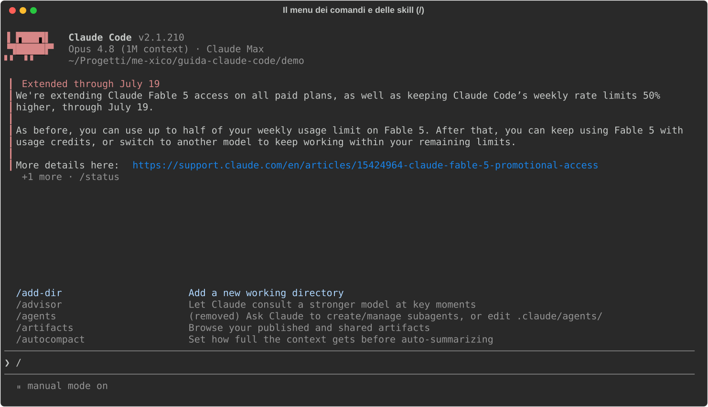
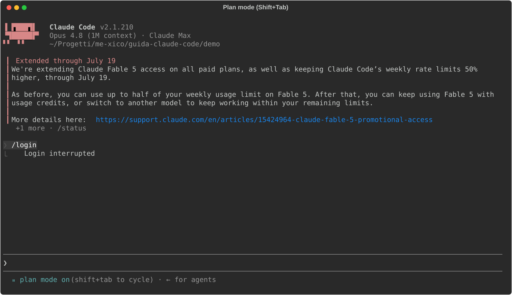
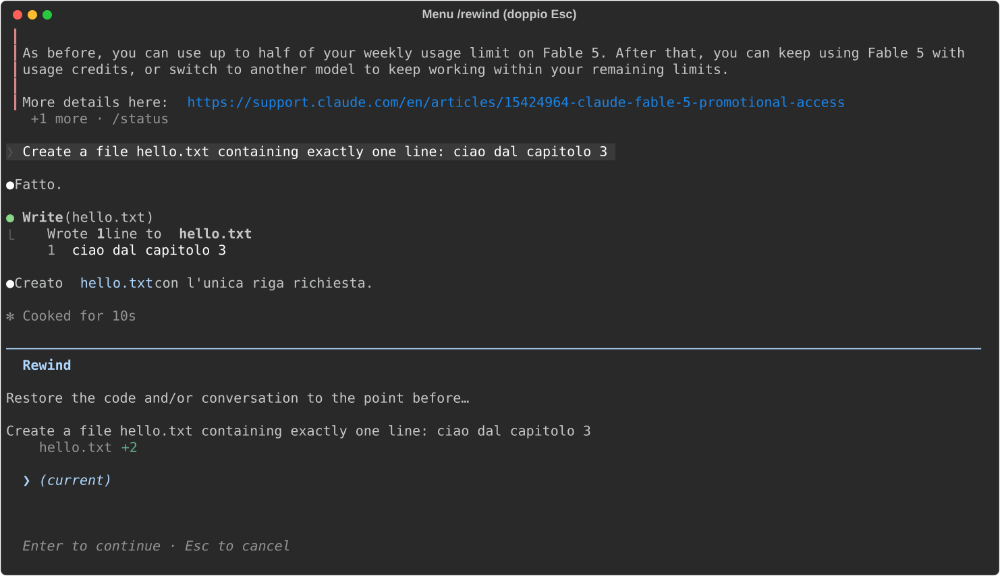
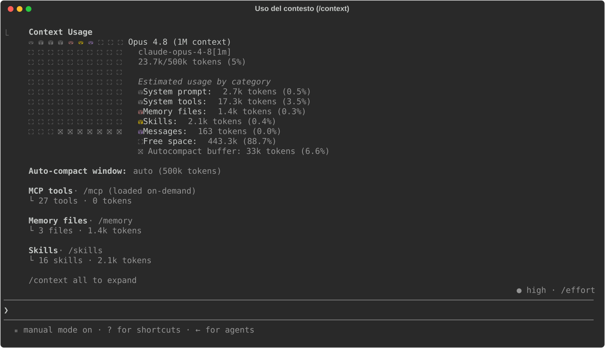
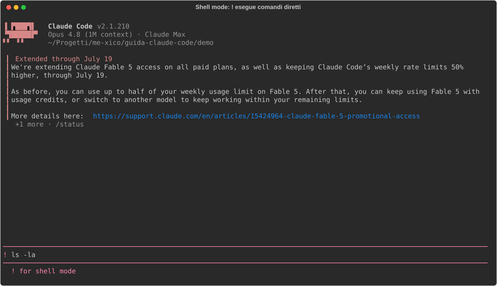
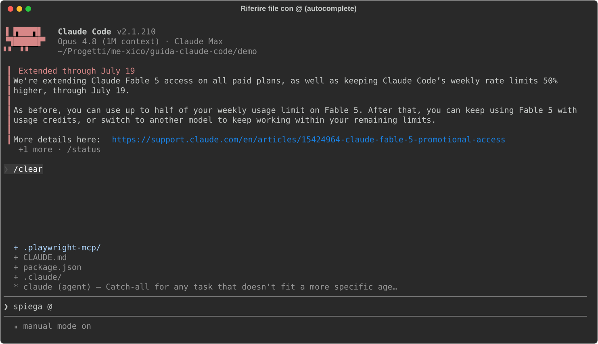
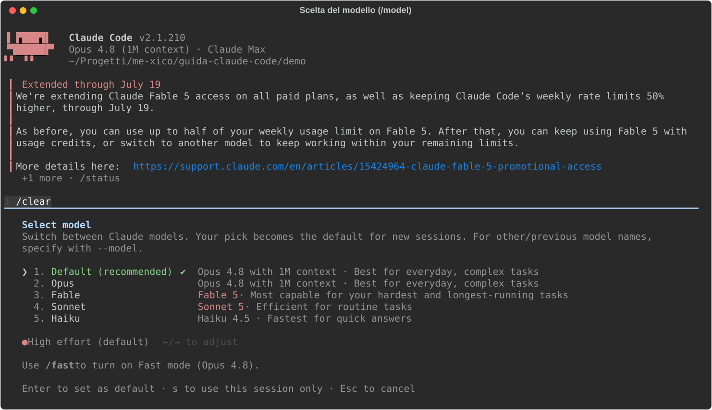

03 - Uso quotidiano¶
Verificato il 15 luglio 2026 sulla doc ufficiale (v2.1.210).
Nel capitolo 02 hai configurato Claude Code; qui vediamo come ci si lavora tutti i giorni. Prima però un concetto di interfaccia che userai in ogni sezione di questo capitolo: i comandi slash.
I comandi slash: il pannello di controllo¶
Cosa sono: comandi che iniziano con / (/clear, /rewind,
/compact…). Non sono prompt per il modello: sono ordini all'applicazione
Claude Code, pensa alla command palette di VS Code, ma testuale.
Dove stanno: ovunque tu possa scrivere un prompt. Digita / come primo
carattere e si apre il menu con tutti i comandi disponibili, ciascuno con la
sua descrizione; continua a scrivere per filtrare, frecce + Invio per
scegliere. Non serve impararli a memoria: il menu è l'indice.
Questo è il menu che appare digitando /: nota le descrizioni accanto a
ogni comando:

Nel menu compaiono anche le skill (cap. 05): comandi che puoi definire tu.
Il flusso: Explore → Plan → Code → Commit¶
Cos'è: il pattern ufficiale per i task non banali. L'idea di fondo: separare il capire dal fare, così correggi Claude su un piano di dieci righe invece che su cento righe di codice già scritto.
Le quattro fasi in pratica:
- Explore (in plan mode): "leggi
src/authe spiegami come funziona il login". Claude legge, cerca, riassume, ma non modifica nulla. - Plan: "prepara un piano di implementazione dettagliato". Claude
produce il piano; con
Ctrl+Glo apri nel tuo editor e lo correggi prima che parta una sola riga di codice: è il momento in cui la revisione costa meno. - Code: approvi il piano e Claude implementa. All'approvazione ti chiede
in che modalità procedere: auto,
acceptEdits, o review manuale di ogni edit (i permission mode del cap. 02). - Commit: "committa con un messaggio descrittivo".
Il plan mode, in concreto: è uno dei permission mode, Claude può solo
leggere ed esplorare, mai scrivere. Si attiva ciclando con Shift+Tab (lo
stesso tasto cicla tutti i mode) oppure all'avvio con
claude --permission-mode plan. Sai di esserci perché lo dice la barra di
stato sotto il prompt, come qui:

È la modalità giusta anche solo per esplorare un codebase nuovo senza rischi: "non può toccare nulla" è garantito dal permission system, non dalla buona volontà del modello.
Quando saltare il piano: se il diff si descrive in una frase (typo, rename, una riga di log), il plan mode è solo overhead. Vai diretto.
Checkpoint e /rewind: la rete di sicurezza¶
Cos'è: l'undo di Claude Code. Ogni volta che Claude modifica un file viene salvato un checkpoint, uno snapshot a cui puoi tornare, come i restore point di git ma automatici e per-intervento.
Dove sta: premi doppio Esc (a input vuoto) oppure digita /rewind.
Si apre il menu di ripristino con la lista dei checkpoint:

Come si usa: scegli il punto a cui tornare e cosa ripristinare.
- codice + conversazione: torni indietro del tutto;
- solo codice: i file tornano com'erano, ma la conversazione resta (utile per dire "rifallo, ma stavolta così");
- solo conversazione: tieni il codice, riavvolgi la chat.
- "Summarize from here" / "up to here": non ripristina, comprime, metà sessione diventa un riassunto, l'altra resta intatta.
Come cambia il modo di lavorare: puoi far tentare a Claude una strada
rischiosa ("riscrivi lo store con Zustand, vediamo") sapendo che il ritorno
costa due tasti. Due limiti da conoscere: traccia solo gli edit fatti da
Claude, non i comandi bash (rm, mv), non le tue modifiche a mano, e
tiene gli ultimi 100 checkpoint.
La regola dei 2 tentativi¶
Se hai corretto Claude due volte sullo stesso punto e ancora sbaglia, non
insistere con la terza correzione. Il motivo è meccanico: ogni tentativo
fallito e ogni tua correzione restano nel contesto, e Claude sta ormai
ragionando dentro una storia piena di falsi indizi. Meglio /clear e un
prompt riformulato da zero che incorpora quello che hai imparato: "fai X;
attenzione che Y non funziona perché Z". Una sessione pulita con un prompt
migliore batte quasi sempre una sessione lunga piena di correzioni
accumulate.
Sessioni¶
Ogni conversazione è una sessione, salvata automaticamente: chiudere il terminale non perde nulla. Le operazioni che servono davvero:
| Cosa | Come |
|---|---|
| Riprendi l'ultima | claude --continue |
| Scegli dal picker | claude --resume (o /resume in sessione) |
| Dai un nome | claude -n nome all'avvio, /rename nome in sessione |
| Riprendi per nome | claude --resume nome |
| Forka la sessione | /branch [nome], esplori un'alternativa senza perdere il filo principale |
/branch merita una nota: crea una diramazione della sessione corrente,
come un branch git della conversazione. Provi una direzione diversa e, se non
convince, il filo principale è ancora lì.
Gestione del contesto¶
Cos'è il contesto: la memoria di lavoro del modello, tutto ciò che Claude "vede" quando genera la prossima risposta. È una finestra a capienza fissa, e non contiene solo la chat: ci stanno il system prompt, le definizioni dei tool, i file di memoria (CLAUDE.md, cap. 04), le skill, e poi ogni tuo messaggio, ogni file letto, ogni output di comando. Una sessione appena aperta ne consuma già una parte prima che tu scriva una parola.
Dove lo vedi: il comando /context mostra la griglia dell'uso per
categoria: è la radiografia della sessione. Guardala: ogni cella è una fetta
di finestra, le categorie in legenda dicono chi la sta occupando, e lo spazio
libero è quello che resta per il lavoro vero:

Perché ti riguarda: il contesto si riempie man mano che lavori, e più è pieno più le prestazioni degradano: Claude "dimentica" le istruzioni date all'inizio, ripete errori già corretti. Quasi tutte le buone abitudini di questa guida derivano da qui. Gli strumenti:
/clear: svuota la conversazione. Da usare tra un task e l'altro, sempre: il task nuovo non ha bisogno della storia del precedente. Niente panico: la sessione svuotata resta recuperabile con/resume./compact [istruzioni]: da usare dentro un task lungo, quando la storia serve ancora ma pesa troppo: sostituisce la conversazione con un riassunto e riparte da lì. Le istruzioni opzionali dicono cosa preservare:/compact tieni i path dei file e le decisioni sul routing./context: il check periodico di cui sopra (tienilo d'occhio in statusline, cap. 14)./btw domanda: la domanda laterale ("com'è la sintassi digrid-area?") che NON entra nella storia: risposta in overlay, contesto intatto. Piccola ma salva-sessioni.
Scorciatoie e trucchi di input¶
La tabella di riferimento, poi i tre trucchi che meritano il dettaglio:
| Tasto | Effetto |
|---|---|
Esc |
interrompe Claude (i tuoi messaggi in coda restano) |
Esc Esc |
input pieno: svuota la riga; input vuoto: apre /rewind |
Ctrl+C |
primo: pulisce l'input; secondo: esce |
Shift+Tab |
cicla i permission mode (cap. 02) |
!comando |
shell mode: esegue il comando, output nel contesto |
@path |
riferisci un file (autocomplete) |
Ctrl+V |
incolla un'immagine dagli appunti (fondamentale per il frontend: screenshot → "riproduci questo layout") |
Ctrl+O |
transcript dettagliato (tool call, tempi, modello) |
Ctrl+R |
ricerca nella storia |
Ctrl+B |
manda in background il comando in corso |
Alt+T / Option+T |
toggle extended thinking (per i problemi difficili; su alcuni modelli è sempre attivo) |
Shell mode (!): digita ! come primo carattere e l'input cambia
aspetto, prompt rosa, hint "! for shell mode" in basso: non stai più
parlando col modello, stai scrivendo un comando per la tua shell. Il comando
viene eseguito direttamente e l'output finisce nel contesto, dove Claude lo
vede. È il modo più rapido per dargli un dato di realtà: ! npm run test e
poi "sistema i test rossi". Ecco com'è l'input in shell mode:

Riferire file con @: digita @ e parte l'autocomplete sui file del
progetto, continua a scrivere per filtrare, Invio per inserire il path.
Claude riceve il riferimento e va a leggersi il file da solo: più preciso
di "il file del bottone" e più economico che incollarne il contenuto
(cap. 14). Così appare l'autocomplete:

Coda di messaggi: mentre Claude lavora puoi scrivere e premere Invio: il messaggio si accoda per il turno dopo. Non serve aspettare.
Vim mode: /config → Editor mode, per chi non può farne a meno.
Cambiare modello: /model¶
/model apre il picker: scegli il modello e il livello di effort (quanto
ragionamento investire). Il default va bene per il lavoro quotidiano; quale
modello per quale task, e cosa costa, è il tema del cap. 14. Il picker:

Due comandi che non ti aspetti¶
/recap: riassunto della sessione. Il lunedì mattina, dopoclaude --continue, risponde alla domanda "dov'eravamo?"./goal condizione: fissi una condizione di completamento, ad esempio/goal tutti i test passano e la build è verde. Da lì in poi un valutatore ricontrolla la condizione a ogni turno e non lascia dichiarare chiuso il task finché non è vera. È il modo più semplice di dare a Claude un criterio di "finito" verificabile invece di fidarti del suo "fatto!" (tema del cap. 11).
In sintesi: plan mode per i task grossi, doppio Esc come undo universale,
/clear tra i task e la regola dei 2 tentativi quando ti impantani. Il
prossimo capitolo entra nel file più importante del tuo setup: il CLAUDE.md.